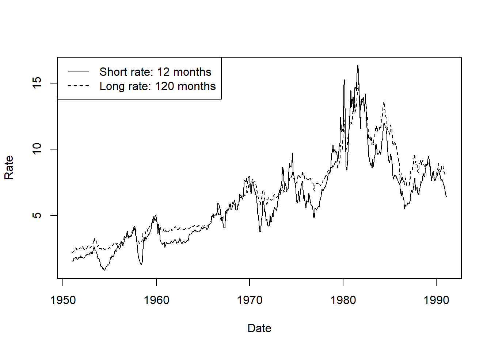
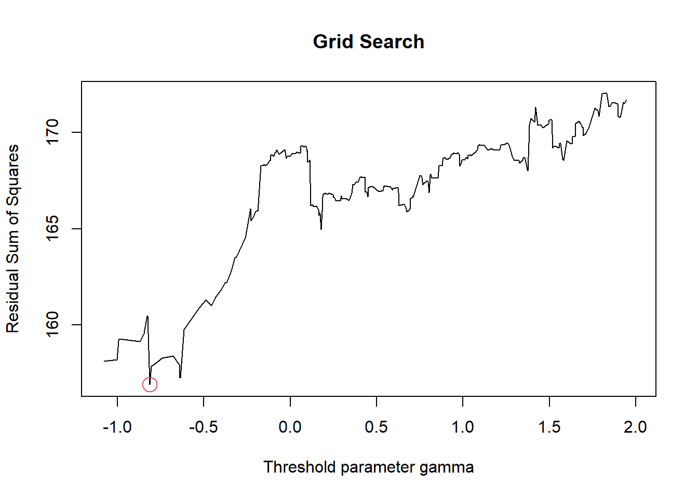

7 Topic 05
7.1 Motivation
Comparison of the analysis of multivariate time series using the urca in combination with the vars package and the tsDyn package
7.2 Linear VECM model estimation
plot(tsDyn::zeroyldMeta$Date, tsDyn::zeroyldMeta$short.run, type = "l",
xlab = "Date", ylab = "Rate")
lines(tsDyn::zeroyldMeta$Date, tsDyn::zeroyldMeta$long.run, lty = 2)
legend("topleft", lty = c(1, 2),
legend = c("Short rate: 12 months", "Long rate: 120 months"))
vecm.tsdyn <- tsDyn::VECM(tsDyn::zeroyldMeta[, c("long.run", "short.run")], r = 1, lag = 1, estim = "ML")
summary(vecm.tsdyn)## #############
## ###Model VECM
## #############
## Full sample size: 482 End sample size: 480
## Number of variables: 2 Number of estimated slope parameters 8
## AIC -2155.763 BIC -2118.199 SSR 176.3897
## Cointegrating vector (estimated by ML):
## long.run short.run
## r1 1 -1.022065
##
##
## ECT Intercept long.run -1
## Equation long.run -0.0116(0.0153) 0.0169(0.0158) 0.0480(0.0682)
## Equation short.run 0.0888(0.0262)*** -0.0362(0.0271) 0.3254(0.1171)**
## short.run -1
## Equation long.run 0.0116(0.0392)
## Equation short.run 0.0506(0.0673)vecm.urca <- urca::ca.jo(x = tsDyn::zeroyldMeta[, c("long.run", "short.run")], ecdet = "none", K = 2)
vecm.urca@V## long.run.l2 short.run.l2
## long.run.l2 1.000000 1.0000000
## short.run.l2 -1.022065 -0.24092627.3 Linear VECM model orthogonalized IRF analysis
Compare non-orthogonalized IRFs first
irf.tsdyn <- tsDyn:::irf.VECM(vecm.tsdyn, ortho = FALSE, boot = FALSE)
irf.tsdyn$irf$short.run## long.run short.run
## [1,] 0.00000000 1.0000000
## [2,] 0.02349183 0.9598307
## [3,] 0.03527669 0.8804053
## [4,] 0.04496349 0.8034402
## [5,] 0.05355177 0.7337633
## [6,] 0.06124490 0.6711849
## [7,] 0.06814511 0.6150379
## [8,] 0.07433515 0.5646676
## [9,] 0.07988821 0.5194802
## [10,] 0.08486985 0.4789427
## [11,] 0.08933889 0.4425764irf.tsdyn$irf$long.run## long.run short.run
## [1,] 1.000000 0.0000000
## [2,] 1.036387 0.4141980
## [3,] 1.035824 0.5014409
## [4,] 1.030731 0.5521480
## [5,] 1.025657 0.5944773
## [6,] 1.021048 0.6320963
## [7,] 1.016908 0.6658043
## [8,] 1.013192 0.6960393
## [9,] 1.009859 0.7231626
## [10,] 1.006869 0.7474948
## [11,] 1.004186 0.7693232v2v.vars <- vars::vec2var(vecm.urca, r = 1)
v2v.vars <- vars::irf(v2v.vars, ortho = FALSE, boot = FALSE)
v2v.vars$irf$short.run## long.run short.run
## [1,] 0.00000000 1.0000000
## [2,] 0.02349183 0.9598307
## [3,] 0.03527669 0.8804053
## [4,] 0.04496349 0.8034402
## [5,] 0.05355177 0.7337633
## [6,] 0.06124490 0.6711849
## [7,] 0.06814511 0.6150379
## [8,] 0.07433515 0.5646676
## [9,] 0.07988821 0.5194802
## [10,] 0.08486985 0.4789427
## [11,] 0.08933889 0.4425764v2v.vars$irf$long.run## long.run short.run
## [1,] 1.000000 0.0000000
## [2,] 1.036387 0.4141980
## [3,] 1.035824 0.5014409
## [4,] 1.030731 0.5521480
## [5,] 1.025657 0.5944773
## [6,] 1.021048 0.6320963
## [7,] 1.016908 0.6658043
## [8,] 1.013192 0.6960393
## [9,] 1.009859 0.7231626
## [10,] 1.006869 0.7474948
## [11,] 1.004186 0.7693232Compare orthongonalized IRFs afterwards
irf.tsdyn <- tsDyn:::irf.VECM(vecm.tsdyn, ortho = TRUE, boot = FALSE)
irf.tsdyn$irf$short.run## long.run short.run
## [1,] 0.000000000 0.3419007
## [2,] 0.008031872 0.3281667
## [3,] 0.012061122 0.3010111
## [4,] 0.015373048 0.2746967
## [5,] 0.018309387 0.2508741
## [6,] 0.020939671 0.2294786
## [7,] 0.023298858 0.2102819
## [8,] 0.025415235 0.1930602
## [9,] 0.027313830 0.1776106
## [10,] 0.029017058 0.1637508
## [11,] 0.030545024 0.1513172irf.tsdyn$irf$long.run## long.run short.run
## [1,] 0.3064400 0.3997063
## [2,] 0.3269802 0.5105772
## [3,] 0.3315181 0.5055651
## [4,] 0.3338293 0.4903403
## [5,] 0.3357073 0.4754615
## [6,] 0.3373701 0.4619765
## [7,] 0.3388592 0.4498636
## [8,] 0.3401949 0.4389955
## [9,] 0.3413931 0.4292455
## [10,] 0.3424679 0.4204987
## [11,] 0.3434322 0.4126520v2v.vars <- vars::vec2var(vecm.urca, r = 1)
v2v.vars <- vars::irf(v2v.vars, ortho = TRUE, boot = FALSE)
v2v.vars$irf$short.run## long.run short.run
## [1,] 0.000000000 0.3404731
## [2,] 0.007998335 0.3267965
## [3,] 0.012010762 0.2997543
## [4,] 0.015308860 0.2735498
## [5,] 0.018232938 0.2498267
## [6,] 0.020852240 0.2285204
## [7,] 0.023201576 0.2094039
## [8,] 0.025309116 0.1922541
## [9,] 0.027199784 0.1768690
## [10,] 0.028895901 0.1630671
## [11,] 0.030417486 0.1506854v2v.vars$irf$long.run## long.run short.run
## [1,] 0.3051605 0.3980374
## [2,] 0.3256150 0.5084453
## [3,] 0.3301339 0.5034542
## [4,] 0.3324355 0.4882930
## [5,] 0.3343056 0.4734762
## [6,] 0.3359614 0.4600475
## [7,] 0.3374444 0.4479853
## [8,] 0.3387744 0.4371625
## [9,] 0.3399676 0.4274532
## [10,] 0.3410380 0.4187430
## [11,] 0.3419983 0.41092907.4 Linear VECM model generalized IRF analysis
Step x: Check class and GIRF method of linear object
class(vecm.tsdyn)## [1] "VECM" "VAR" "nlVar"tsDyn:::GIRF.nlVar## function (object, n.ahead = 10, seed = NULL, n.hist = 20, n.shock = 20,
## R = 10, hist_li = NULL, shock_li = NULL, ...)
## {
## GIRF.setar(object, n.ahead = n.ahead, seed = seed, n.hist = n.hist,
## n.shock = n.shock, R = R, hist_li = hist_li, shock_li = shock_li,
## ...)
## }
## <bytecode: 0x000002052fe11568>
## <environment: namespace:tsDyn>Step x: Call function tsDyn:::GIRF.setar()
# tsDyn_GIRF_setar_fun no 01 ----
# tsDyn_GIRF_setar_fun - function (object, n.ahead = 10, seed = NULL, n.hist = 20, n.shock = 20,
# R = 10, hist_li = NULL, shock_li = NULL, ...) {
# inputs
object <- vecm.tsdyn
n.ahead <- 10
seed <- NULL
n.hist = 20
n.shock = 20
R = 10
hist_li <- NULL
shock_li <- NULL
# lag <- tsDyn:::get_lag(object)
lag <- tsDyn:::get_lag.nlVar(object)
n_start <- ifelse(inherits(object, c("VECM", "TVECM")), lag + 1, lag)
# x_orig <- get_data_orig(object, as.df = TRUE)
x_orig <- tsDyn:::get_data_orig.nlVar(object, as.df = TRUE)
N <- nrow(x_orig)
resids <- as.data.frame(residuals(object, initVal = FALSE))
n_used <- nrow(resids)
# nVar <- get_nVar(object)
nVar <- tsDyn:::get_nVar.nlVar(object)
sample_hist <- function() {
hist_M <- sample(n_start:N, size = 1, replace = FALSE)
(hist_M - n_start + 1):hist_M
}
nrow_length <- function(x) {
nr <- nrow(x)
if (is.null(nr)) {
nr <- length(x)
}
nr
}
if (is.null(hist_li)) {
if (!is.null(seed)) {
set.seed(seed)
}
samples_hist <- sample(n_start:N, size = n.hist, replace = FALSE)
hist_li <- lapply(samples_hist, function(i) x_orig[(i - n_start + 1):i, , drop = FALSE])
} else {
if (!is.list(hist_li)) {
stop("hist_li should be a list of vectors/matrices")
}
if (unique(sapply(hist_li, nrow_length)) != n_start) {
stop("each element of hist_li should have length lags (+1 if VECM)")
}
}
if (is.null(shock_li)) {
if (!is.null(seed)) {
set.seed(seed)
}
samples_shock <- sample(seq_len(n_used), size = n.shock, replace = FALSE)
shock_li <- lapply(samples_shock, function(i) resids[i, , drop = FALSE])
} else {
if (!is.list(shock_li)) {
stop("shock_li should be a list of vectors")
}
if (unique(sapply(shock_li, nrow_length)) != 1) {
stop("each element of shock_li should have length lags")
}
}
M <- expand.grid(hist = hist_li, shock = shock_li)
n_cases <- nrow(M)
shock_M <- as.data.frame(do.call("rbind", M$shock))
colnames(shock_M) <- paste("shock_var", seq_len(nVar), sep = "")
hist_M <- as.data.frame(do.call("rbind", lapply(M$hist, function(x) c(as.matrix(x)))))
colnames(hist_M) <- paste("hist_x", rep(seq_len(nVar), each = n_start), "_l", rep(seq_len(n_start), times = nVar), sep = "")
rep_info <- cbind(n_simu = seq_len(nrow(M)), hist_M, shock_M)
# sims <- lapply(1:nrow(M), function(i) irf_1_shock_ave(object = object, shock = M$shock[[i]], hist = M$hist[[i]], n.ahead = n.ahead, R = R, seed = seed, ...))
sims <- lapply(1:nrow(M), function(i) tsDyn:::irf_1_shock_ave(object = object, shock = M$shock[[i]], hist = M$hist[[i]], n.ahead = n.ahead, R = R, seed = seed))
sims_df <- do.call("rbind", sims)
n.ahead_here <- length(unique(head(sims_df$n.ahead, 2 * (n.ahead * lag))))
sims_df$n_simu <- rep(seq_len(n_cases), each = n.ahead_here * nVar)
sims_df$girf <- with(sims_df, sim_1 - sim_2)
sims_df2 <- merge(rep_info, sims_df, by = "n_simu", sort = FALSE)
class(sims_df2) <- c("GIRF_df", "data.frame")
# sims_df2
head(sims_df2, 30)## n_simu hist_x1_l1 hist_x1_l2 hist_x2_l1 hist_x2_l2 shock_var1 shock_var2
## 1 1 6.781 6.793 7.048 7.593 -0.01988781 -0.2544937
## 2 1 6.781 6.793 7.048 7.593 -0.01988781 -0.2544937
## 3 1 6.781 6.793 7.048 7.593 -0.01988781 -0.2544937
## 4 1 6.781 6.793 7.048 7.593 -0.01988781 -0.2544937
## 5 1 6.781 6.793 7.048 7.593 -0.01988781 -0.2544937
## 6 1 6.781 6.793 7.048 7.593 -0.01988781 -0.2544937
## 7 1 6.781 6.793 7.048 7.593 -0.01988781 -0.2544937
## 8 1 6.781 6.793 7.048 7.593 -0.01988781 -0.2544937
## 9 1 6.781 6.793 7.048 7.593 -0.01988781 -0.2544937
## 10 1 6.781 6.793 7.048 7.593 -0.01988781 -0.2544937
## 11 1 6.781 6.793 7.048 7.593 -0.01988781 -0.2544937
## 12 1 6.781 6.793 7.048 7.593 -0.01988781 -0.2544937
## 13 1 6.781 6.793 7.048 7.593 -0.01988781 -0.2544937
## 14 1 6.781 6.793 7.048 7.593 -0.01988781 -0.2544937
## 15 1 6.781 6.793 7.048 7.593 -0.01988781 -0.2544937
## 16 1 6.781 6.793 7.048 7.593 -0.01988781 -0.2544937
## 17 1 6.781 6.793 7.048 7.593 -0.01988781 -0.2544937
## 18 1 6.781 6.793 7.048 7.593 -0.01988781 -0.2544937
## 19 1 6.781 6.793 7.048 7.593 -0.01988781 -0.2544937
## 20 1 6.781 6.793 7.048 7.593 -0.01988781 -0.2544937
## 21 1 6.781 6.793 7.048 7.593 -0.01988781 -0.2544937
## 22 1 6.781 6.793 7.048 7.593 -0.01988781 -0.2544937
## 23 2 3.958 3.917 3.009 3.010 -0.01988781 -0.2544937
## 24 2 3.958 3.917 3.009 3.010 -0.01988781 -0.2544937
## 25 2 3.958 3.917 3.009 3.010 -0.01988781 -0.2544937
## 26 2 3.958 3.917 3.009 3.010 -0.01988781 -0.2544937
## 27 2 3.958 3.917 3.009 3.010 -0.01988781 -0.2544937
## 28 2 3.958 3.917 3.009 3.010 -0.01988781 -0.2544937
## 29 2 3.958 3.917 3.009 3.010 -0.01988781 -0.2544937
## 30 2 3.958 3.917 3.009 3.010 -0.01988781 -0.2544937
## n.ahead var sim_1 sim_2 girf
## 1 0 long.run 6.819479 6.839367 -0.01988781
## 2 1 long.run 6.910245 6.936835 -0.02658998
## 3 2 long.run 6.912156 6.941734 -0.02957795
## 4 3 long.run 7.134392 7.166334 -0.03194190
## 5 4 long.run 7.009632 7.043658 -0.03402666
## 6 5 long.run 7.067973 7.103866 -0.03589285
## 7 6 long.run 6.981864 7.019431 -0.03756656
## 8 7 long.run 7.152451 7.191519 -0.03906800
## 9 8 long.run 7.192817 7.233232 -0.04041493
## 10 9 long.run 7.174000 7.215623 -0.04162326
## 11 10 long.run 7.109745 7.152452 -0.04270725
## 12 0 short.run 7.130191 7.384684 -0.25449367
## 13 1 short.run 7.095154 7.347662 -0.25250833
## 14 2 short.run 7.055808 7.289838 -0.23403013
## 15 3 short.run 7.195078 7.410529 -0.21545146
## 16 4 short.run 6.910377 7.108938 -0.19856096
## 17 5 short.run 6.752890 6.936274 -0.18338333
## 18 6 short.run 6.520976 6.690741 -0.16976465
## 19 7 short.run 6.555727 6.713274 -0.15754701
## 20 8 short.run 6.621875 6.768462 -0.14658654
## 21 9 short.run 6.594736 6.731490 -0.13675391
## 22 10 short.run 6.431286 6.559219 -0.12793305
## 23 0 long.run 3.851579 3.871467 -0.01988781
## 24 1 long.run 3.679377 3.705967 -0.02658998
## 25 2 long.run 3.748439 3.778016 -0.02957795
## 26 3 long.run 3.787635 3.819577 -0.03194190
## 27 4 long.run 3.558770 3.592797 -0.03402666
## 28 5 long.run 3.647957 3.683850 -0.03589285
## 29 6 long.run 3.671695 3.709262 -0.03756656
## 30 7 long.run 3.640808 3.679876 -0.03906800 tail(sims_df2, 30)## n_simu hist_x1_l1 hist_x1_l2 hist_x2_l1 hist_x2_l2 shock_var1 shock_var2
## 8771 399 4.175 4.206 3.814 3.777 -0.02281378 -0.2824986
## 8772 399 4.175 4.206 3.814 3.777 -0.02281378 -0.2824986
## 8773 399 4.175 4.206 3.814 3.777 -0.02281378 -0.2824986
## 8774 399 4.175 4.206 3.814 3.777 -0.02281378 -0.2824986
## 8775 399 4.175 4.206 3.814 3.777 -0.02281378 -0.2824986
## 8776 399 4.175 4.206 3.814 3.777 -0.02281378 -0.2824986
## 8777 399 4.175 4.206 3.814 3.777 -0.02281378 -0.2824986
## 8778 399 4.175 4.206 3.814 3.777 -0.02281378 -0.2824986
## 8779 400 2.815 2.838 2.447 2.546 -0.02281378 -0.2824986
## 8780 400 2.815 2.838 2.447 2.546 -0.02281378 -0.2824986
## 8781 400 2.815 2.838 2.447 2.546 -0.02281378 -0.2824986
## 8782 400 2.815 2.838 2.447 2.546 -0.02281378 -0.2824986
## 8783 400 2.815 2.838 2.447 2.546 -0.02281378 -0.2824986
## 8784 400 2.815 2.838 2.447 2.546 -0.02281378 -0.2824986
## 8785 400 2.815 2.838 2.447 2.546 -0.02281378 -0.2824986
## 8786 400 2.815 2.838 2.447 2.546 -0.02281378 -0.2824986
## 8787 400 2.815 2.838 2.447 2.546 -0.02281378 -0.2824986
## 8788 400 2.815 2.838 2.447 2.546 -0.02281378 -0.2824986
## 8789 400 2.815 2.838 2.447 2.546 -0.02281378 -0.2824986
## 8790 400 2.815 2.838 2.447 2.546 -0.02281378 -0.2824986
## 8791 400 2.815 2.838 2.447 2.546 -0.02281378 -0.2824986
## 8792 400 2.815 2.838 2.447 2.546 -0.02281378 -0.2824986
## 8793 400 2.815 2.838 2.447 2.546 -0.02281378 -0.2824986
## 8794 400 2.815 2.838 2.447 2.546 -0.02281378 -0.2824986
## 8795 400 2.815 2.838 2.447 2.546 -0.02281378 -0.2824986
## 8796 400 2.815 2.838 2.447 2.546 -0.02281378 -0.2824986
## 8797 400 2.815 2.838 2.447 2.546 -0.02281378 -0.2824986
## 8798 400 2.815 2.838 2.447 2.546 -0.02281378 -0.2824986
## 8799 400 2.815 2.838 2.447 2.546 -0.02281378 -0.2824986
## 8800 400 2.815 2.838 2.447 2.546 -0.02281378 -0.2824986
## n.ahead var sim_1 sim_2 girf
## 8771 3 short.run 3.256986 3.496553 -0.23956730
## 8772 4 short.run 3.195293 3.416142 -0.22084936
## 8773 5 short.run 3.212575 3.416605 -0.20402930
## 8774 6 short.run 3.131550 3.320487 -0.18893685
## 8775 7 short.run 3.027308 3.202705 -0.17539707
## 8776 8 short.run 3.068877 3.232127 -0.16325049
## 8777 9 short.run 3.179318 3.331672 -0.15235380
## 8778 10 short.run 3.054500 3.197078 -0.14257838
## 8779 0 long.run 2.638546 2.661359 -0.02281378
## 8780 1 long.run 2.504663 2.534943 -0.03028031
## 8781 2 long.run 2.632450 2.666046 -0.03359667
## 8782 3 long.run 2.734590 2.770807 -0.03621699
## 8783 4 long.run 2.687779 2.726306 -0.03852742
## 8784 5 long.run 2.789953 2.830549 -0.04059557
## 8785 6 long.run 3.011267 3.053717 -0.04245041
## 8786 7 long.run 3.047998 3.092112 -0.04411432
## 8787 8 long.run 3.147798 3.193405 -0.04560701
## 8788 9 long.run 3.297849 3.344795 -0.04694610
## 8789 10 long.run 3.324510 3.372657 -0.04814740
## 8790 0 short.run 2.106243 2.388742 -0.28249857
## 8791 1 short.run 1.781168 2.061768 -0.28060022
## 8792 2 short.run 1.950852 2.211005 -0.26015300
## 8793 3 short.run 2.365106 2.604673 -0.23956730
## 8794 4 short.run 2.241123 2.461973 -0.22084936
## 8795 5 short.run 2.260433 2.464462 -0.20402930
## 8796 6 short.run 2.838161 3.027098 -0.18893685
## 8797 7 short.run 2.959442 3.134839 -0.17539707
## 8798 8 short.run 2.965504 3.128754 -0.16325049
## 8799 9 short.run 3.038766 3.191119 -0.15235380
## 8800 10 short.run 3.011509 3.154087 -0.14257838# }
# ANCKER
# tsDyn_GIRF_setar_fun no 02 ----
# tsDyn_GIRF_setar_fun - function (object, n.ahead = 10, seed = NULL, n.hist = 20, n.shock = 20,
# R = 10, hist_li = NULL, shock_li = NULL, ...) {
# inputs
object <- vecm.tsdyn
n.ahead <- 10
seed <- NULL
n.hist = 20
n.shock = 20
R = 10
hist_li <- NULL
shock_li <- NULL
# lag <- tsDyn:::get_lag(object)
lag <- tsDyn:::get_lag.nlVar(object)
n_start <- ifelse(inherits(object, c("VECM", "TVECM")), lag + 1, lag)
# x_orig <- get_data_orig(object, as.df = TRUE)
x_orig <- tsDyn:::get_data_orig.nlVar(object, as.df = TRUE)
N <- nrow(x_orig)
resids <- as.data.frame(residuals(object, initVal = FALSE))
n_used <- nrow(resids)
# nVar <- get_nVar(object)
nVar <- tsDyn:::get_nVar.nlVar(object)
sample_hist <- function() {
hist_M <- sample(n_start:N, size = 1, replace = FALSE)
(hist_M - n_start + 1):hist_M
}
nrow_length <- function(x) {
nr <- nrow(x)
if (is.null(nr)) {
nr <- length(x)
}
nr
}
if (is.null(hist_li)) {
if (!is.null(seed)) {
set.seed(seed)
}
samples_hist <- sample(n_start:N, size = n.hist, replace = FALSE)
hist_li <- lapply(samples_hist, function(i) x_orig[(i - n_start + 1):i, , drop = FALSE])
} else {
if (!is.list(hist_li)) {
stop("hist_li should be a list of vectors/matrices")
}
if (unique(sapply(hist_li, nrow_length)) != n_start) {
stop("each element of hist_li should have length lags (+1 if VECM)")
}
}
if (is.null(shock_li)) {
if (!is.null(seed)) {
set.seed(seed)
}
samples_shock <- sample(seq_len(n_used), size = n.shock, replace = FALSE)
shock_li <- lapply(samples_shock, function(i) resids[i, , drop = FALSE])
} else {
if (!is.list(shock_li)) {
stop("shock_li should be a list of vectors")
}
if (unique(sapply(shock_li, nrow_length)) != 1) {
stop("each element of shock_li should have length lags")
}
}
M <- expand.grid(hist = hist_li, shock = shock_li)
n_cases <- nrow(M)
shock_M <- as.data.frame(do.call("rbind", M$shock))
colnames(shock_M) <- paste("shock_var", seq_len(nVar), sep = "")
hist_M <- as.data.frame(do.call("rbind", lapply(M$hist, function(x) c(as.matrix(x)))))
colnames(hist_M) <- paste("hist_x", rep(seq_len(nVar), each = n_start), "_l", rep(seq_len(n_start), times = nVar), sep = "")
rep_info <- cbind(n_simu = seq_len(nrow(M)), hist_M, shock_M)
# sims <- lapply(1:nrow(M), function(i) irf_1_shock_ave(object = object, shock = M$shock[[i]], hist = M$hist[[i]], n.ahead = n.ahead, R = R, seed = seed, ...))
sims <- lapply(1:nrow(M), function(i) tsDyn:::irf_1_shock_ave(object = object, shock = M$shock[[i]], hist = M$hist[[i]], n.ahead = n.ahead, R = R, seed = seed))
sims_df <- do.call("rbind", sims)
n.ahead_here <- length(unique(head(sims_df$n.ahead, 2 * (n.ahead * lag))))
sims_df$n_simu <- rep(seq_len(n_cases), each = n.ahead_here * nVar)
sims_df$girf <- with(sims_df, sim_1 - sim_2)
sims_df2 <- merge(rep_info, sims_df, by = "n_simu", sort = FALSE)
class(sims_df2) <- c("GIRF_df", "data.frame")
# sims_df2
head(sims_df2, 30)## n_simu hist_x1_l1 hist_x1_l2 hist_x2_l1 hist_x2_l2 shock_var1 shock_var2
## 1 1 9.015 9.280 7.496 7.483 -0.2672951 -0.4176587
## 2 1 9.015 9.280 7.496 7.483 -0.2672951 -0.4176587
## 3 1 9.015 9.280 7.496 7.483 -0.2672951 -0.4176587
## 4 1 9.015 9.280 7.496 7.483 -0.2672951 -0.4176587
## 5 1 9.015 9.280 7.496 7.483 -0.2672951 -0.4176587
## 6 1 9.015 9.280 7.496 7.483 -0.2672951 -0.4176587
## 7 1 9.015 9.280 7.496 7.483 -0.2672951 -0.4176587
## 8 1 9.015 9.280 7.496 7.483 -0.2672951 -0.4176587
## 9 1 9.015 9.280 7.496 7.483 -0.2672951 -0.4176587
## 10 1 9.015 9.280 7.496 7.483 -0.2672951 -0.4176587
## 11 1 9.015 9.280 7.496 7.483 -0.2672951 -0.4176587
## 12 1 9.015 9.280 7.496 7.483 -0.2672951 -0.4176587
## 13 1 9.015 9.280 7.496 7.483 -0.2672951 -0.4176587
## 14 1 9.015 9.280 7.496 7.483 -0.2672951 -0.4176587
## 15 1 9.015 9.280 7.496 7.483 -0.2672951 -0.4176587
## 16 1 9.015 9.280 7.496 7.483 -0.2672951 -0.4176587
## 17 1 9.015 9.280 7.496 7.483 -0.2672951 -0.4176587
## 18 1 9.015 9.280 7.496 7.483 -0.2672951 -0.4176587
## 19 1 9.015 9.280 7.496 7.483 -0.2672951 -0.4176587
## 20 1 9.015 9.280 7.496 7.483 -0.2672951 -0.4176587
## 21 1 9.015 9.280 7.496 7.483 -0.2672951 -0.4176587
## 22 1 9.015 9.280 7.496 7.483 -0.2672951 -0.4176587
## 23 2 3.987 4.019 2.942 2.989 -0.2672951 -0.4176587
## 24 2 3.987 4.019 2.942 2.989 -0.2672951 -0.4176587
## 25 2 3.987 4.019 2.942 2.989 -0.2672951 -0.4176587
## 26 2 3.987 4.019 2.942 2.989 -0.2672951 -0.4176587
## 27 2 3.987 4.019 2.942 2.989 -0.2672951 -0.4176587
## 28 2 3.987 4.019 2.942 2.989 -0.2672951 -0.4176587
## 29 2 3.987 4.019 2.942 2.989 -0.2672951 -0.4176587
## 30 2 3.987 4.019 2.942 2.989 -0.2672951 -0.4176587
## n.ahead var sim_1 sim_2 girf
## 1 0 long.run 9.098229 9.365524 -0.2672951
## 2 1 long.run 9.038827 9.325660 -0.2868327
## 3 2 long.run 9.125489 9.417093 -0.2916042
## 4 3 long.run 9.233738 9.528026 -0.2942887
## 5 4 long.run 9.348268 9.644787 -0.2965195
## 6 5 long.run 9.155405 9.453906 -0.2985007
## 7 6 long.run 9.323196 9.623471 -0.3002759
## 8 7 long.run 9.208196 9.510064 -0.3018681
## 9 8 long.run 9.182041 9.485337 -0.3032964
## 10 9 long.run 9.141934 9.446512 -0.3045778
## 11 10 long.run 9.428278 9.734005 -0.3057273
## 12 0 short.run 7.374956 7.792615 -0.4176587
## 13 1 short.run 7.306490 7.818085 -0.5115947
## 14 2 short.run 7.603232 8.104974 -0.5017417
## 15 3 short.run 7.765840 8.248990 -0.4831503
## 16 4 short.run 8.165087 8.630450 -0.4653635
## 17 5 short.run 8.124336 8.573619 -0.4492825
## 18 6 short.run 8.566243 9.001085 -0.4348422
## 19 7 short.run 8.601800 9.023686 -0.4218862
## 20 8 short.run 8.561421 8.971684 -0.4102633
## 21 9 short.run 8.553327 8.953163 -0.3998363
## 22 10 short.run 8.902982 9.293464 -0.3904823
## 23 0 long.run 3.796233 4.063528 -0.2672951
## 24 1 long.run 3.720981 4.007814 -0.2868327
## 25 2 long.run 3.668138 3.959742 -0.2916042
## 26 3 long.run 3.493087 3.787376 -0.2942887
## 27 4 long.run 3.567152 3.863672 -0.2965195
## 28 5 long.run 3.450267 3.748767 -0.2985007
## 29 6 long.run 3.439857 3.740133 -0.3002759
## 30 7 long.run 3.563164 3.865032 -0.3018681 tail(sims_df2, 30)## n_simu hist_x1_l1 hist_x1_l2 hist_x2_l1 hist_x2_l2 shock_var1 shock_var2
## 8771 399 4.225 4.191 3.792 3.867 -0.004671349 -0.3841743
## 8772 399 4.225 4.191 3.792 3.867 -0.004671349 -0.3841743
## 8773 399 4.225 4.191 3.792 3.867 -0.004671349 -0.3841743
## 8774 399 4.225 4.191 3.792 3.867 -0.004671349 -0.3841743
## 8775 399 4.225 4.191 3.792 3.867 -0.004671349 -0.3841743
## 8776 399 4.225 4.191 3.792 3.867 -0.004671349 -0.3841743
## 8777 399 4.225 4.191 3.792 3.867 -0.004671349 -0.3841743
## 8778 399 4.225 4.191 3.792 3.867 -0.004671349 -0.3841743
## 8779 400 7.336 7.037 8.664 8.465 -0.004671349 -0.3841743
## 8780 400 7.336 7.037 8.664 8.465 -0.004671349 -0.3841743
## 8781 400 7.336 7.037 8.664 8.465 -0.004671349 -0.3841743
## 8782 400 7.336 7.037 8.664 8.465 -0.004671349 -0.3841743
## 8783 400 7.336 7.037 8.664 8.465 -0.004671349 -0.3841743
## 8784 400 7.336 7.037 8.664 8.465 -0.004671349 -0.3841743
## 8785 400 7.336 7.037 8.664 8.465 -0.004671349 -0.3841743
## 8786 400 7.336 7.037 8.664 8.465 -0.004671349 -0.3841743
## 8787 400 7.336 7.037 8.664 8.465 -0.004671349 -0.3841743
## 8788 400 7.336 7.037 8.664 8.465 -0.004671349 -0.3841743
## 8789 400 7.336 7.037 8.664 8.465 -0.004671349 -0.3841743
## 8790 400 7.336 7.037 8.664 8.465 -0.004671349 -0.3841743
## 8791 400 7.336 7.037 8.664 8.465 -0.004671349 -0.3841743
## 8792 400 7.336 7.037 8.664 8.465 -0.004671349 -0.3841743
## 8793 400 7.336 7.037 8.664 8.465 -0.004671349 -0.3841743
## 8794 400 7.336 7.037 8.664 8.465 -0.004671349 -0.3841743
## 8795 400 7.336 7.037 8.664 8.465 -0.004671349 -0.3841743
## 8796 400 7.336 7.037 8.664 8.465 -0.004671349 -0.3841743
## 8797 400 7.336 7.037 8.664 8.465 -0.004671349 -0.3841743
## 8798 400 7.336 7.037 8.664 8.465 -0.004671349 -0.3841743
## 8799 400 7.336 7.037 8.664 8.465 -0.004671349 -0.3841743
## 8800 400 7.336 7.037 8.664 8.465 -0.004671349 -0.3841743
## n.ahead var sim_1 sim_2 girf
## 8771 3 short.run 3.729601 4.040841 -0.311240336
## 8772 4 short.run 3.772994 4.057664 -0.284669990
## 8773 5 short.run 3.962337 4.223142 -0.260804731
## 8774 6 short.run 4.010553 4.249945 -0.239391952
## 8775 7 short.run 4.082121 4.302303 -0.220182190
## 8776 8 short.run 4.134639 4.337588 -0.202949079
## 8777 9 short.run 4.053997 4.241486 -0.187489257
## 8778 10 short.run 4.142258 4.315878 -0.173620256
## 8779 0 long.run 6.966454 6.971125 -0.004671349
## 8780 1 long.run 7.098349 7.112215 -0.013866281
## 8781 2 long.run 7.254361 7.272752 -0.018391089
## 8782 3 long.run 7.232112 7.254201 -0.022088720
## 8783 4 long.run 7.364818 7.390183 -0.025364416
## 8784 5 long.run 7.394290 7.422588 -0.028298388
## 8785 6 long.run 7.224883 7.255813 -0.030929929
## 8786 7 long.run 7.392956 7.426247 -0.033290625
## 8787 8 long.run 7.501049 7.536458 -0.035408398
## 8788 9 long.run 7.551281 7.588590 -0.037308250
## 8789 10 long.run 7.423807 7.462820 -0.039012607
## 8790 0 short.run 7.738376 8.122550 -0.384174272
## 8791 1 short.run 7.656163 8.026840 -0.370677124
## 8792 2 short.run 7.617876 7.958447 -0.340571469
## 8793 3 short.run 7.590126 7.901367 -0.311240336
## 8794 4 short.run 7.650885 7.935555 -0.284669990
## 8795 5 short.run 7.624758 7.885562 -0.260804731
## 8796 6 short.run 7.029904 7.269296 -0.239391952
## 8797 7 short.run 7.276154 7.496336 -0.220182190
## 8798 8 short.run 7.394401 7.597350 -0.202949079
## 8799 9 short.run 7.514079 7.701568 -0.187489257
## 8800 10 short.run 7.222148 7.395768 -0.173620256# }Definition generalized impulse response functions (GIRs)
General
\[\begin{align*} GI_{y}\left(n, u_{t}^{0}, \Omega_{t-1}^{0}\right) = \text{E}\left(y_{t+n}|u_{t}=u_{t}^{0}, \Omega_{t-1}^{0}\right) - \text{E}\left(y_{t+n}|\Omega_{t-1}^{0}\right) \end{align*}\]
Particular VAR
\[\begin{align*} GI_{y}\left(n, u_{t}^{0}, \Omega_{t-1}^{0}\right) = A_{n}u_{t}^{0} \end{align*}\]
which is independent of the “history” of the process.
The choice of the vector shocks \(u_{t}^{0}\) is arbitrary.
One possibility is to consider a large number of likely shocks and then examine the empirical distribution function of \(A_{n}u_{t}^{0}\) for all these shocks.
In the case where \(u_{t}^{0}\) is drawn from the same distribution as \(u_{t}\), namely a multivariate normal distribution with zero means and a constant covariance matrix \(\Sigma\) we have the analyitical result
\[\begin{align*} GI_{y}\left(n, u_{t}^{0}, \Omega_{t-1}^{0}\right) \sim N\left(0, A_{n} \Sigma A_{n}^{'}\right) \end{align*}\]
Persistence profiles (general on X)
Lee and Pesaran (1993) refer to H,(n), seen as a function of n, as the (unscaled) ‘persistence profile’, character- izing the time profile of the effects of the system-wide shocks on X,.
Persitence profiles (specific on Z)
The above concept of the persistence profile can be readily extended to cointegrated systems. The (unscaled) persistence profile of the cointegrating relations 2, = P’X, is given by
n.hist:- The number of past histories to consider. Should be high, ideally size of data (minus lags).
- For VAR models …
Some interpretation:
- 400 simulations times 11 steps times 2 shock variables equals 8800 rows
girf = sim_1 - sim_2
Check plot methods:
tsDyn_plot_GIRF_df <- function (x, plot_type = c("density", "line"), n.ahead = c(1, 5, 10), var = unique(x$var)[1], n_simu = c(1, 2), ...) {
# inputs
x <- sims_df2
plot_type <- "density"
n.ahead <- c(1, 5, 10)
var <- unique(x$var)[1]
n_simu <- c(1, 2)
# plot_type <- match.arg(plot_type)
plot_type <- plot_type
if (plot_type == "density") {
# plot_GIRF_dens(x = x, n.ahead = n.ahead, var = var, ...)
tsDyn:::plot_GIRF_dens(x = x, n.ahead = n.ahead, var = var)
} else if (plot_type == "line") {
# plot_GIRF_line(x = x, n_simu = n_simu, var = var, ...)
tsDyn:::plot_GIRF_line(x = x, n_simu = n_simu, var = var)
}
}
tsDyn_plot_GIRF_line <- function (x, n_simu = 1:5, var = unique(x$var)[1], add_legend = TRUE, ...) {
# inputs
x <- sims_df2
n_simu <- 1:5
var <- unique(x$var)[1]
add_legend <- TRUE
df <- x[x$n_simu %in% n_simu & x$var %in% var, c("n_simu", "var", "n.ahead", "girf")]
df_w <- reshape(df, idvar = c("n.ahead", "var"), timevar = "n_simu", direction = "wide", v.names = "girf")
colnames(df_w) <- gsub("girf\\.", "n_simu: ", colnames(df_w))
df_w2 <- df_w[, -c(1, 2), drop = FALSE]
# plot(NA, xlim = range(df$n.ahead), ylim = range(df$girf), ylab = "GIRF", xlab = "n.ahead", ...)
plot(NA, xlim = range(df$n.ahead), ylim = range(df$girf), ylab = "GIRF", xlab = "n.ahead")
invisible <- lapply(1:ncol(df_w2), function(x) lines(x = df_w$n.ahead, y = df_w2[, x], col = x))
if (add_legend) {
legend("topright", legend = colnames(df_w2), fill = 1:nrow(df_w2))
}
}
tsDyn_plot_GIRF_dens <- function (x, n.ahead = c(1, 5, 10), var = unique(x$var)[1], add_legend = TRUE, ...) {
# inputs
x <- sims_df2
n.ahead <- c(1, 5, 10)
var <- unique(x$var)[1]
add_legend <- TRUE
df <- x[x$n.ahead %in% n.ahead & x$var %in% var, c("n_simu", "var", "n.ahead", "girf")]
df_w <- reshape(df, idvar = c("n_simu", "var"), timevar = "n.ahead", direction = "wide", v.names = "girf")
colnames(df_w) <- gsub("girf\\.", "n.ahead: ", colnames(df_w))
dens <- apply(df_w[, -c(1, 2), drop = FALSE], 2, density)
# plot(NA, xlim = range(sapply(dens, "[", "x")),
# ylim = range(sapply(dens, "[", "y")), ylab = "GIRF",
# xlab = "Density", ...)
plot(NA, xlim = range(sapply(dens, "[", "x")),
ylim = range(sapply(dens, "[", "y")), ylab = "GIRF",
xlab = "Density")
invisible <- mapply(lines, dens, col = 1:length(dens))
if (add_legend) {
legend("topright", legend = names(dens), fill = 1:length(dens))
}
}Step x: Call function tsDyn:::irf_1_shock_ave()
# tsDyn_irf_1_shock_ave <- function (object, shock, hist, R = 10, n.ahead = 10, innov = NULL,
# shock_both = TRUE, returnStarting = FALSE, add.regime = FALSE,
# seed = NULL) {
# inputs
i <- 1
object <- vecm.tsdyn
shock <- M$shock[[i]]
hist <- M$hist[[i]]
n.ahead <- 10
R <- 10
seed <- NULL
innov <- NULL
shock_both <- TRUE
returnStarting <- FALSE
add.regime <- FALSE
if (!is.null(seed)) {
set.seed(seed)
}
# out <- replicate(R, irf_1_shock(object = object, shock = shock,
# hist = hist, n.ahead = n.ahead, innov = innov, shock_both = shock_both,
# returnStarting = returnStarting, add.regime = add.regime),
# simplify = FALSE)
out <- replicate(R, tsDyn:::irf_1_shock(object = object, shock = shock,
hist = hist, n.ahead = n.ahead, innov = innov, shock_both = shock_both,
returnStarting = returnStarting, add.regime = add.regime),
simplify = FALSE)
out_M <- do.call("rbind", out)
out_M_means <- aggregate(out_M[, grep("sim|regime", colnames(out_M))], list(n.ahead = out_M$n.ahead, var = out_M$var), mean)
out_M_means## n.ahead var sim_1 sim_2
## 1 0 long.run 9.056020 9.323315
## 2 1 long.run 9.074386 9.361219
## 3 2 long.run 8.784565 9.076169
## 4 3 long.run 8.812084 9.106373
## 5 4 long.run 8.799752 9.096271
## 6 5 long.run 8.881730 9.180231
## 7 6 long.run 8.986100 9.286376
## 8 7 long.run 8.938590 9.240458
## 9 8 long.run 8.846973 9.150270
## 10 9 long.run 8.916755 9.221333
## 11 10 long.run 8.972200 9.277927
## 12 0 short.run 7.376666 7.794324
## 13 1 short.run 7.600698 8.112293
## 14 2 short.run 7.104135 7.605876
## 15 3 short.run 7.047400 7.530550
## 16 4 short.run 7.130903 7.596266
## 17 5 short.run 7.414129 7.863411
## 18 6 short.run 7.698557 8.133399
## 19 7 short.run 7.728154 8.150041
## 20 8 short.run 7.707704 8.117967
## 21 9 short.run 7.879125 8.278962
## 22 10 short.run 8.004127 8.394609# }Step x: Call function tsDyn:::irf_1_shock()
# tsDyn_irf_1_shock_fun <- function (object, shock, hist,
# n.ahead = 10, innov = NULL, shock_both = TRUE,
# returnStarting = FALSE, add.regime = FALSE, seed = NULL) {
# inputs
object <- vecm.tsdyn
i <- 1
shock <- M$shock[[i]]
hist <- M$hist[[i]]
n.ahead <- 10
innov <- NULL
shock_both <- TRUE
returnStarting <- FALSE
add.regime <- FALSE
add.regime <- FALSE
seed <- NULL
# lag <- get_lag(object)
lag <- tsDyn:::get_lag.nlVar(object)
n_start <- ifelse(inherits(object, c("VECM", "TVECM")), lag + 1, lag)
include <- object$include
B <- coef(object, hyperCoef = FALSE)
# nthresh <- get_nthresh(object)
nthresh <- tsDyn:::get_nthresh.nlVar(object)
# Thresh <- getTh(object)
Thresh <- tsDyn:::getTh.nlVar(object)
N <- n.ahead + 1
# K <- get_nVar(object)
K <- tsDyn:::get_nVar.nlVar(object)
# series <- get_series(object)
series <- tsDyn:::get_series(object)
beta <- object$model.specific$coint
model <- switch(class(object)[[1]],
ar = "setar",
linear = "setar",
setar = "setar",
VAR = "TVAR",
TVAR = "TVAR",
VECM = "TVECM",
TVECM = "TVECM", stop("Error model not recognised!"))
if (inherits(object, c("TVAR", "TVECM"))) {
B <- do.call("cbind", B)
}
if (is.null(innov)) {
res_obj <- as.matrix(residuals(object))
res_obj <- res_obj[-seq_len(lag), , drop = FALSE]
if (!is.null(seed)) {
set.seed(seed)
}
index_samp <- sample(seq_len(nrow(res_obj)), N, replace = FALSE)
innov <- res_obj <- res_obj[index_samp, , drop = FALSE]
}
hist_M <- as.matrix(hist)
shock_M <- as.matrix(shock)
if (nrow(hist_M) != n_start) {
stop("hist should be of same nrow as lag (+1 if VECM)")
}
if (ncol(hist_M) != K) {
stop("hist should be of same ncol as number of variables")
}
if (nrow(shock_M) != 1) {
stop("shock should have only one row")
}
if (ncol(shock_M) != K) {
stop("shock should be of same ncol as number of variables")
}
if (nrow(innov) != N) {
stop("innov should be of same length as n.ahead + 1")
}
innov_1 <- rbind(shock_M, innov[-1, , drop = FALSE])
if (shock_both) {
innov_1 <- innov + rbind(shock_M, matrix(0, nrow = n.ahead, ncol = K))
}
innov_2 <- innov
# sim_1 <- model.gen(model = model, B = B, lag = lag, include = include,
# nthresh = nthresh, Thresh = Thresh, beta = beta, starting = hist_M,
# innov = innov_1, n = N, returnStarting = TRUE, add.regime = add.regime)
sim_1 <- tsDyn:::model.gen(model = model, B = B, lag = lag, include = include,
nthresh = nthresh, Thresh = Thresh, beta = beta, starting = hist_M,
innov = innov_1, n = N, returnStarting = TRUE, add.regime = add.regime)
# sim_2 <- model.gen(model = model, B = B, lag = lag, include = include,
# nthresh = nthresh, Thresh = Thresh, beta = beta, starting = hist_M,
# innov = innov_2, n = N, returnStarting = TRUE, add.regime = add.regime)
sim_2 <- tsDyn:::model.gen(model = model, B = B, lag = lag, include = include,
nthresh = nthresh, Thresh = Thresh, beta = beta, starting = hist_M,
innov = innov_2, n = N, returnStarting = TRUE, add.regime = add.regime)
n.aheads_all <- c(-n_start:0, seq_len(n.ahead))
if (K > 1) {
df <- data.frame(var = rep(series, each = nrow(sim_1)), n.ahead = n.aheads_all, sim_1 = unlist(sim_1), sim_2 = unlist(sim_2))
rownames(df) <- seq_len(nrow(df))
} else {
df <- data.frame(var = series, n.ahead = n.aheads_all, sim_1 = sim_1$res, sim_2 = sim_2$res)
}
if (add.regime) {
df <- df[, 1:4]
colnames(df) <- c("n.ahead", "sim_1", "regime_1", "sim_2")
}
if (!returnStarting) {
df <- subset(df, n.ahead >= 0)
}
df## var n.ahead sim_1 sim_2
## 3 long.run 0 9.197031 9.464327
## 4 long.run 1 8.898894 9.185726
## 5 long.run 2 8.836150 9.127755
## 6 long.run 3 8.697946 8.992235
## 7 long.run 4 8.665609 8.962129
## 8 long.run 5 8.557435 8.855936
## 9 long.run 6 8.381104 8.681379
## 10 long.run 7 8.319928 8.621796
## 11 long.run 8 8.036332 8.339629
## 12 long.run 9 7.586294 7.890872
## 13 long.run 10 7.646679 7.952406
## 16 short.run 0 7.689293 8.106952
## 17 short.run 1 6.944679 7.456274
## 18 short.run 2 7.047379 7.549121
## 19 short.run 3 6.976456 7.459606
## 20 short.run 4 7.565632 8.030996
## 21 short.run 5 7.237260 7.686543
## 22 short.run 6 6.906369 7.341211
## 23 short.run 7 6.727155 7.149041
## 24 short.run 8 6.632981 7.043244
## 25 short.run 9 5.937837 6.337673
## 26 short.run 10 5.666728 6.057210# }tsDyn_model_gen_fun <- function (model = c("setar", "TVAR", "TVECM"), B, n = 200, lag = 1,
include = c("const", "trend", "none", "both"), nthresh = 0,
thDelay = 0, Thresh, trendStart = 1, starting = NULL, innov,
exo, round_digits = 10, returnStarting = FALSE, add.regime = FALSE,
show.parMat = FALSE, thVar = NULL, mTh = 1, beta, ...) {
model <- model
B <- B
lag <- lag
include <- include
nthresh <- nthresh
Thresh <- Thresh
beta <- beta
starting <- hist_M
innov <- innov_1
n <- N
thDelay <- 0
trendStart <- 1
exo <- NULL
round_digits <- 10
returnStarting <- TRUE
add.regime <- add.regime
show.parMat <- FALSE
thVar <- NULL
mTh <- 1
# model <- match.arg(model)
model <- model
if (model == "setar") {
res <- tsDyn:::setar.gen(B = B, n = n, lag = lag, include = include,
nthresh = nthresh, Thresh = Thresh, thDelay = thDelay,
starting = as.numeric(starting[, 1]), innov = innov,
exo = exo, trendStart = trendStart, round_digits = round_digits,
returnStarting = returnStarting, add.regime = add.regime,
show.parMat = show.parMat, ...)
} else if (model == "TVAR") {
res <- tsDyn:::TVAR.gen(B = B, n = n, lag = lag, include = include,
nthresh = nthresh, Thresh = Thresh, thDelay = thDelay,
starting = starting, innov = innov, thVar = thVar,
mTh = mTh, trendStart = trendStart, round_digits = round_digits,
returnStarting = returnStarting, add.regime = add.regime,
show.parMat = show.parMat, ...)
} else if (model == "TVECM") {
res <- tsDyn:::TVECM.gen(B = B, n = n, lag = lag, include = include,
beta = beta, nthresh = nthresh, Thresh = Thresh,
starting = starting, innov = innov, round_digits = round_digits,
returnStarting = returnStarting, show.parMat = show.parMat, ...)
}
as.data.frame(res)
}tsDyn_TVECM_gen_fun <- function (B, beta, n = 200, lag = 1,
include = c("const", "trend", "none", "both"), nthresh = 1, Thresh,
starting = NULL, innov, returnStarting = FALSE, show.parMat = FALSE, round_digits = 4) {
# inputs
B <- B
n <- n
lag <- lag
include <- include
beta <- beta
nthresh <- nthresh
Thresh <- Thresh
starting <- starting
innov <- innov
round_digits <- round_digits
returnStarting <- returnStarting
show.parMat <- show.parMat
p <- lag
# include <- match.arg(include)
include <- include
if (!nthresh %in% c(0, 1, 2)) {
stop("Arg nthresh should be either 0, 1 or 2")
}
if (missing(beta)) {
stop("please provide arg beta (cointegrating value)")
}
ninc <- switch(include, none = 0, const = 1, trend = 1, both = 2)
incVal <- switch(include, none = NULL, const = "const", trend = "trend", both = c("const", "trend"))
k <- nrow(B)
if (is.vector(beta)) {
if (length(beta) == k - 1) {
beta <- c(1, -beta)
}
tBETA <- matrix(beta, nrow = 1)
r <- 1
} else {
if (nrow(beta) != k) {
stop("beta should have k rows and r cols")
}
r <- ncol(beta)
tBETA <- t(beta)
}
esp <- p * k + r + ninc
pa <- switch(as.character(nthresh), `0` = "", `1` = c("_low", "_upr"), `2` = c("_low", "_mid", "_upr"))
lags <- as.vector(outer("L{x", 1:k, paste, sep = ""))
lags2 <- paste(rep(lags, times = p), "}{", rep(1:p, each = p), "}", sep = "")
if (esp * (nthresh + 1) != ncol(B)) {
colnames_Matrix_input <- as.vector(outer(c(rep("ECT", r), incVal, lags2), pa, paste, sep = ""))
cat("Matrix B badly specified: should have ", esp * (nthresh + 1), "columns, but has", ncol(B), "\n")
print(matrix(NA, nrow = k, ncol = esp * (nthresh + 1), dimnames = list(paste("Equ x", 1:k, sep = ""), colnames_Matrix_input)))
stop()
}
rownames(B) <- paste("Equ x", 1:k, ":", sep = "")
if (!is.null(starting)) {
if (!is.matrix(starting)) {
stop("Provide 'starting' as matrix")
}
if (!all(dim(starting) == c(p + 1, k))) {
stop("Bad specification of starting values. Should have nrow = lag +1 and ncol = number of variables")
}
}
Bmat <- B
if (include != "both") {
aa1 <- r + switch(include, none = 1:2, const = 2, trend = 1, both = NULL)
aa <- sort(rep(aa1, each = nthresh + 1) + (0:nthresh) * (p * k + max(aa1)))
# Bmat <- myInsertCol(Bmat, c = aa, 0)
Bmat <- tsDyn:::myInsertCol(Bmat, c = aa, 0)
}
nparBmat <- p * k + 2 + r
Yb <- matrix(0, nrow = n + p + 1, ncol = k)
if (!is.null(starting)) {
Yb[1:(p + 1), ] <- starting
}
trend <- c(rep(NA, p + 1), seq_len(n))
# start generation of Yb
if (nthresh == 0) {
for (i in (p + 2):(n + p + 1)) {
ECT <- Bmat[, 1:r] %*% tBETA %*% matrix(Yb[i - 1, ], ncol = 1)
Yb[i, ] <- rowSums(cbind(Yb[i - 1, ], Bmat[, r + 1], Bmat[, r + 2] * trend[i], ECT, Bmat[, -c(1:(r + 2))] %*% matrix(t(Yb[i - c(1:p), ] - Yb[i - c(2:(p + 1)), ]), ncol = 1), innov[i - p - 1, ]))
}
} else if (nthresh == 1) {
BD <- Bmat[, seq_len(nparBmat)]
BU <- Bmat[, -seq_len(nparBmat)]
for (i in (p + 2):(n + p + 1)) {
ECT <- Yb[i - 1, , drop = FALSE] %*% t(tBETA)
if (round(ECT, round_digits) <= Thresh) {
B_here <- BD
} else {
B_here <- BU
}
Yb[i, ] <- rowSums(cbind(Yb[i - 1, ], B_here[, 1] * as.vector(ECT), B_here[, 2], B_here[, 3] * trend[i], B_here[, -c(1, 2, 3)] %*% matrix(t(Yb[i - c(1:p), ] - Yb[i - c(2:(p + 1)), ]), ncol = 1), innov[i - p - 1, ]))
}
} else if (nthresh == 2) {
BD <- Bmat[, seq_len(nparBmat)]
BM <- Bmat[, seq_len(nparBmat) + nparBmat]
BU <- Bmat[, seq_len(nparBmat) + 2 * nparBmat]
for (i in (p + 2):(n + p + 1)) {
ECT <- Yb[i - 1, , drop = FALSE] %*% t(tBETA)
if (round(ECT, round_digits) <= Thresh[1]) {
B_here <- BD
} else if (round(ECT, round_digits) > Thresh[2]) {
B_here <- BU
} else {
B_here <- BM
}
Yb[i, ] <- rowSums(cbind(Yb[i - 1, ], B_here[, 1] * as.vector(ECT), B_here[, 2], B_here[, 3] * trend[i], B_here[, -c(1, 2, 3)] %*% matrix(t(Yb[i - c(1:p), ] - Yb[i - c(2:(p + 1)), ]), ncol = 1), innov[i - p - 1, ]))
}
}
if (show.parMat) {
colnames_Matrix_system <- as.vector(outer(c(rep("ECT", r), "Const", "Trend", lags2), pa, paste, sep = ""))
colnames(Bmat) <- colnames_Matrix_system
print(Bmat)
}
if (!returnStarting) {
Yb <- Yb[-seq_len(p + 1), ]
}
return(Yb)
}Strategies to hijack tsDyn:::GIRF function
- edit
tsDyn::TVECMfunction for known breaks to create ingredients oftsDyn:::GIRFfunction.
7.5 TVECM model estimation
tvec <- tsDyn::TVECM(tsDyn::zeroyldMeta[, c("long.run", "short.run")], lag = 2, ngridTh = 300, beta = list(exact = 1))## 2 (0.7%) points of the grid lead to regimes with percentage of observations < trim and were not computed
7.6 TVECM model orthngalized IRF analysis
# don't run
irf.tvec <- tsDyn:::irf.VECM(tvec, ortho = FALSE)irf.tvec <- tsDyn:::irf.TVECM(tvec, ortho = TRUE, boot = FALSE, n.ahead = 10)
irf.tvec$irf$short.run## long.run short.run
## [1,] 0.0000000000 0.3201782612
## [2,] -0.0417116461 0.0295448213
## [3,] -0.0152852188 -0.0548594485
## [4,] 0.0516574379 -0.0003151505
## [5,] 0.0413890468 0.0635663107
## [6,] -0.0065558061 -0.0062368076
## [7,] 0.0001577064 -0.0244389162
## [8,] 0.0313667356 0.0328783020
## [9,] 0.0221484845 0.0458458385
## [10,] 0.0003683447 -0.0005472588
## [11,] 0.0100973499 -0.0066522541irf.tvec$irf$long.run## long.run short.run
## [1,] 0.29654579 0.37579964
## [2,] 0.25826203 0.48847064
## [3,] 0.07754857 0.05482439
## [4,] 0.14984722 -0.01328498
## [5,] 0.28559826 0.28278939
## [6,] 0.21498971 0.31928930
## [7,] 0.11600731 0.10205934
## [8,] 0.17582624 0.10356710
## [9,] 0.24355831 0.26466235
## [10,] 0.19303490 0.24664211
## [11,] 0.14810080 0.12696172irf.l.tvec <- tsDyn:::irf.TVECM(tvec, ortho = TRUE, regime = "L", boot = FALSE, n.ahead = 10)
irf.l.tvec$irf$short.run## long.run short.run
## [1,] 0.0000000000 0.3201782612
## [2,] -0.0417116461 0.0295448213
## [3,] -0.0152852188 -0.0548594485
## [4,] 0.0516574379 -0.0003151505
## [5,] 0.0413890468 0.0635663107
## [6,] -0.0065558061 -0.0062368076
## [7,] 0.0001577064 -0.0244389162
## [8,] 0.0313667356 0.0328783020
## [9,] 0.0221484845 0.0458458385
## [10,] 0.0003683447 -0.0005472588
## [11,] 0.0100973499 -0.0066522541irf.l.tvec$irf$long.run## long.run short.run
## [1,] 0.29654579 0.37579964
## [2,] 0.25826203 0.48847064
## [3,] 0.07754857 0.05482439
## [4,] 0.14984722 -0.01328498
## [5,] 0.28559826 0.28278939
## [6,] 0.21498971 0.31928930
## [7,] 0.11600731 0.10205934
## [8,] 0.17582624 0.10356710
## [9,] 0.24355831 0.26466235
## [10,] 0.19303490 0.24664211
## [11,] 0.14810080 0.12696172irf.h.tvec <- tsDyn:::irf.TVECM(tvec, ortho = TRUE, regime = "H", boot = FALSE, n.ahead = 10)
irf.h.tvec$irf$short.run## long.run short.run
## [1,] 0.00000000 0.3201783
## [2,] 0.02892842 0.3592035
## [3,] 0.02935621 0.3401690
## [4,] 0.03117986 0.3238179
## [5,] 0.03377063 0.3089948
## [6,] 0.03620496 0.2953376
## [7,] 0.03851678 0.2825830
## [8,] 0.04069657 0.2705763
## [9,] 0.04274829 0.2592656
## [10,] 0.04468054 0.2486118
## [11,] 0.04650045 0.2385771irf.h.tvec$irf$long.run## long.run short.run
## [1,] 0.2965458 0.3757996
## [2,] 0.3172186 0.4793394
## [3,] 0.3221100 0.5025273
## [4,] 0.3242745 0.4960566
## [5,] 0.3254243 0.4868761
## [6,] 0.3267788 0.4786850
## [7,] 0.3281280 0.4711548
## [8,] 0.3294040 0.4641105
## [9,] 0.3306066 0.4574831
## [10,] 0.3317391 0.4512405
## [11,] 0.3328055 0.4453604